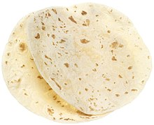

How to make a Flour Tortilla

Making a flour tortilla is easy. It's a recipe
made by 1/3 of the planet. You will need
- 1 cup of flour
- 1/3 cup of water
- 1 teaspoon of oil
- salt and/or seasoning
The above amount of ingredients
will make 2 medium tortillas, or 1 large 28cm
flour tortilla. Salt is your basic
seasoning, however herb mix also works well.
Next, follow this procedure.
- Mix the dry ingredients, flour and salt or herbs.
- Add the oil, and mix in. Next add the water
- Knead the dough until its firm and soft.
- The ratio of 1 cup to 1/3 cup of water is perfect, however
add more water or flour if needed to get a perfect dough.
- Let the dough sit for 30 minutes. The longer it sits,
up to 2 hours, the better and softer it will be. Test it!
- Roll flat and fry in a little oil. Any size you like,
and as crispy as you like.
- Eat!
And thats the recipe. I encourage you to try milk instead of water,
and different herbs.